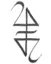

Entity Grimoire
Hekate

Brimo SigilDadophorous SigilEnodia SigilPreferred Places
Preferred Vocations
- Magician
Domains & Sacred Objects
- Keys
- Magick
- Moon
- Night
- Torches
Origins and Evolution
Hekate's origins trace to pre-Greek Anatolia and Thrace, where she appears as a great goddess figure before her integration into Greek mythology. She may have evolved from Bendidia, also known as Bendis, the primordial Thracian lunar goddess. As Dark Moon Goddess, Queen of the Night, and Ruler of Heaven, Earth, and the Underworld, Hekate holds the title Queen of Witches. Her name likely derives from a feminine form of Hekatos, an obscure Apollo epithet meaning "far-shooter" or "far-darter."
Literary Appearances
Hesiod's Theogony (circa 700 BCE): Presents Hekate as cosmically powerful, retaining privileges across sky, earth, and sea. Zeus honors her above all others, granting her power to give or withhold anything from mortals. She aids warriors in battle, athletes in competition, fishermen at sea, and shepherds with their flocks. She receives special honor as kourotrophos (child-nurse), blessing young people who seek her favor.
Homeric Hymn to Demeter: Depicts Hekate as witness to Persephone's abduction, emerging from her cave when she hears Persephone's cry. She approaches Demeter with torches to report what she heard (though not what she saw). After Persephone's return, Hekate becomes her permanent attendant and companion in the underworld.
Evolution Through Greek Culture
5th Century BCE - Chthonic Phase: Hekate becomes increasingly associated with necromancy, ghosts, and underworld sorcery. She appears at crossroads and haunts tombs with her pack of spectral hounds. This is when she becomes firmly established as Queen of Witches and mistress of harmful magick.
Hellenistic Period - Expansion: Syncretism spreads her worship throughout Mediterranean. She becomes identified with other goddesses in different regions while maintaining distinct identity as mistress of magick.
2nd Century CE - Chaldean Oracles: Hekate undergoes radical transformation into World Soul and cosmic principle. The Oracles present her as transcendent force governing universe itself, far beyond earlier chthonic associations. She becomes philosophical concept as much as goddess.
The Crone Misconception
Important clarification: Hekate is never portrayed as a crone in ancient sources. This modern association comes from confusion with other triple goddess frameworks and Wiccan wheel-of-the-year mythology.
Ancient depictions: Hekate appears consistently as young woman, often in triplicate form (three bodies or three heads) but always youthful. Her "triple" nature refers to her power over three realms (sky, earth, underworld) and her presence at three-way crossroads, not to maiden-mother-crone lifecycle.
The triple goddess error: The maiden-mother-crone framework widely popularized in modern Wicca does not reflect ancient practice. Ancient Greeks did not worship a universal triple goddess following this pattern. Hekate's ancient worship centered on her liminal power and command over boundaries, not on feminine life stages.
Cultural Context
Anatolian: Original cultural context before Greek adoption
Greek: Primary cultural development through classical and Hellenistic periods
Roman: Continued worship as Trivia at crossroads (the name Trivia literally means "three roads," from which the English word "trivial" derives, reflecting her dominion over three-way crossroads)
Chaldean: Mystical and philosophical transformation in late antiquity
Associated Symbols
Hekataion: Protective amulet depicting Hekate's triple form, placed at doorways and crossroads to ward off evil. These apotropaic images served as guardians of thresholds and boundaries.
Torches: Her most consistent attribute across all periods, representing her role as guide through darkness and illuminator of hidden knowledge.
Keys: Symbol of her role as keyholder and guardian of thresholds between worlds.
Titanic Nature
Titans are primordial forces that preceded the Greek gods, embodying the fundamental, ineradicable workings of Nature and Time. Hekate is counted as a fourth-generation titan, setting her apart from the Olympian gods as an older and more elemental power. Unlike the original twelve titans, she was never bound to the authority of the gods, moving instead freely between worlds, realms, aeons, and dimensions. She is sometimes called the Liminal One: neither any single thing nor its opposite, but the path by which opposing forces are reconciled. In this role she acts as a connector and mediator, opening the channels between this world and the ones sought beyond it, and carrying across them information, wisdom, will, and the very stuff of life.
Snakes: Associated with her chthonic power and wisdom, often depicted in her hair or wrapped around her body.
Dogs: Her sacred animals, whose howling announces her presence. Black dogs especially connected to her nocturnal processions.
Colors
Hekate's colors include black, gray, silver, and deep midnight navy blue.
Epithets & Titles
Signs of Her Presence
Those who work with Hekate learn to recognize the signs of her nearness. Frequent encounters with the number three, the unexpected appearance of a stray dog that lingers in your space, or a prophetic dream may all indicate she has heard your requests. Being followed by dogs, particularly black dogs, signals that Hekate is reaching out.
Hekate's Procession
On nights sacred to her, Hekate roams the Earth accompanied by her pack of hounds and Wolves and a host of ghosts, blessing those who have left offerings for her. The howling of the wind and the barking of dogs announce her passage through the darkness.
Hekate at the Boundaries of the Oikos
Within Hellenic household worship, Hekate is one of three Gods who guard the Oikos from outside threats, working alongside Hermes and Apollo Agyieus. Her station is at the threshold of the home and just outside its perimeter fence, taking the same office She holds along the roads, sovereign and keeper of the place where ways meet. The doorway itself opens onto such a meeting, since several paths lead away from any entrance.
Where space allows, the household sets a niche beside the doorway for Her image together with the smaller working tools of the rite, the incense burner and the offering bowl among them. In a modern apartment, a shelf or ledge takes the place of the fence niche. Devotional images here should be three-dimensional, statues or carvings rather than flat pictures, which are reserved for ordinary household decoration.
Daily practice is uncomplicated. Outside of specific sacred days it consists of a simple offering and the burning of incense whenever the practitioner enters or leaves the home.
The Sow Thistle
The sow thistle (Sonchus oleraceus) is counted as one of Hekate's gifts to the world. Where the plant is spotted, the words "Open sow-thistle" spoken in the manner of "Open sesame" will reveal any concealed or hidden treasures in the immediate vicinity.
Role in Hellenic Household Worship
Within the household, offerings to Hekate include saffron, rosemary, garlic, red mullet, amphiphon (a sweet), styrax incense, and dry laurel leaves. Her emblems are the yellow veil, the torch, the double-edged knife, the key, a candle made of three combined colours, serpents, the scourge, and bronze. The colour linked to Her is saffron. Her sacred animals are the ferret, the dog, the bull, and the lioness. The oak is the plant and fruit sacred to Her.
Sacred Midwife Role
For millennia the office of midwife was held by consecrated priestesses of spirits with dominion over birth, among them Hathor, Hekate, Kybele, Tanit, and Tlazolteotl. These birth spirits were themselves understood as divine sacred midwives, with their priestess-midwives serving as their earthly representatives. The connection endured long after the rise of Christianity, when midwives came to be identified with witches, and the classic witch's broomstick is said to have been, in an earlier age, the professional emblem carried by Hekate's own priestess-midwives. Through this lineage, midwives preserved magickal and shamanic traditions for centuries. Sacred midwives such as Hekate remain eternally powerful, and may still be appealed to for protection, good fortune, and an easy, brief, and safe labor.